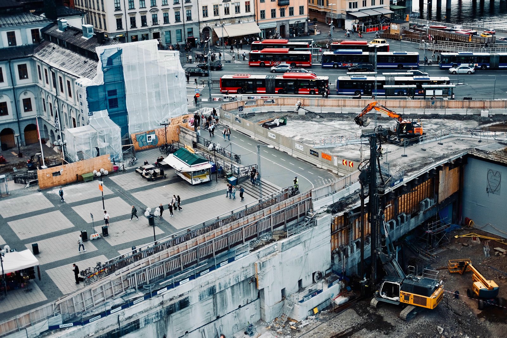

BIM‑координація для замовника: мінімальний набір
Оновлено: 2026 · Час читання: ~6 хв
ВІМ-моделювання підвищує прозорість та ефективність реалізації проєктів будь-якої складності та функціонального призначення.
1) Застосування ВІМ технологій у ЄС
У країнах ЄС BIM/ВІМ давно перестав бути «красивою 3D‑картинкою» — це про управління інформацією на всьому життєвому циклі об’єкта:
від задуму й проєктування до будівництва, експлуатації та модернізації.
На рівні ЄС цифровізацію підтримує, зокрема, підхід у сфері публічних закупівель: директива 2014/24/EU дає можливість
замовникам/державам‑членам вимагати використання електронних інструментів (у т.ч. BIM) у закупівлях робіт.
Для державних замовників також створені практичні методичні матеріали — EU BIM Task Group Handbook, де описано, як впроваджувати
BIM у публічному секторі.
На практиці у Європі найчастіше застосовують підхід «мінімального набору», коли замовник чітко визначає правила гри:
• які моделі потрібні (архітектура/конструкції/інженерія/мережі/інфраструктура);
• у яких форматах і на яких етапах (IFC, BCF, PDF, специфікації);
• де ведеться «єдина правда» (CDE — Common Data Environment);
• хто відповідає за координацію та які перевірки є обов’язковими (clash‑контроль, перевірка атрибутів, ревізії).
Важливий нюанс для замовника: у багатьох країнах ЄС BIM регламентується не «однією кнопкою‑законом», а системою вимог, стандартів та державних
програм.
Наприклад, у Великій Британії державна стратегія будівництва закріплювала вимогу застосовувати повністю колаборативний 3D BIM для проєктів
центральних органів влади, а далі підхід еволюціонував у системне управління інформацією на базі ISO‑процесів.
2) Законодавство України для ВІМ-моделювання
В Україні BIM «юридично» доцільно розглядати у двох площинах:
(а) базове містобудівне поле (закони/ДБН/процедури),
та (б) стандарти й контрактні вимоги, які замовник прямо прописує у ТЗ, договорі та тендерній документації.
Базовий каркас містобудування формує, зокрема, Закон України «Про регулювання містобудівної діяльності» №3038‑VI.
Але ключовий «BIM‑важіль» для замовника — це стандарти управління інформацією:
• ДСТУ ISO 19650‑1:2020 (концепції та принципи управління інформацією з використанням BIM);
• ДСТУ ISO 19650‑2:2020 (процеси на етапі проєктування/будівництва — інформаційні вимоги, постачання, перевірки, статуси
контейнерів тощо).
Практичний висновок для замовника: навіть якщо «BIM не прописаний одним рядком у законі як обов’язковий для всіх», ви можете зробити BIM
обов’язковим на рівні договору.
Для цього потрібні два документи‑ядра:
• EIR/AIR (вимоги замовника до інформації / до активу);
• BEP (план виконання BIM від виконавців).
Окремо рекомендовано враховувати інформаційну безпеку, особливо для критичної інфраструктури: у міжнародній практиці це закривається вимогами на
кшталт ISO 19650‑5 (security‑minded approach), де описані принципи роботи з чутливою інформацією без її розкриття «зайвим»
учасникам.
3) Єфект підвищення прозорості будівництва
Для замовника прозорість — це не «більше звітів», а менше невизначеності.
BIM‑координація дає керовану структуру даних: що саме будуємо, з чого складається, які є зміни, хто їх погодив і як це вплинуло на строки та
вартість.
Мінімальний набір, який реально підвищує прозорість:
• CDE: єдине середовище даних з версіями, статусами (WIP/Shared/Published/Archived), журналом змін та контрольованими
доступами;
• IFC як нейтральний формат передачі моделі між різними ПЗ (щоб уникнути «vendor lock‑in»);
• BCF для фіксації колізій/зауважень як задач із прив’язкою до елементів моделі (а не «телефон/скріншот/чат»);
• координаційний звіт на кожну контрольну точку: перелік колізій, статуси, відповідальні, дата закриття;
• правила найменування файлів/моделей/ревізій та структура класифікації (щоб кошториси, обсяги та специфікації збиралися без
ручного «крою»).
Результат: замовник отримує прогнозованість (план/факт), зменшення переробок, менше «сірих зон» у виконавчій документації, і головне —
контроль змін як у фінансах, так і в технічних рішеннях.
4) ВІМ, як основа відбудови України
ВІМ‑підхід критично важливий для відбудови, бо відбудова — це не один об’єкт, а система тисяч об’єктів, які мають бути керованими
та взаємосумісними.
Якщо кожен проєкт живе «у своєму форматі», держава/громада/донори отримують архів PDF без можливості швидко аналізувати обсяги, типові рішення,
потреби в матеріалах та пріоритети.
BIM як «основа» означає:
• єдині інформаційні вимоги (що саме має бути в моделі та документах);
• масштабовані бібліотеки рішень (типові вузли/елементи/специфікації);
• сумісність та довгостроковість (IFC як нейтральний стандарт, щоб дані не «зникли» після зміни підрядника або ПЗ);
• підтримка експлуатації (AIR: модель/дані не закінчуються актом вводу — вони потрібні для ремонту, обстежень, модернізацій).
Для замовника (державного чи приватного) це перетворюється у практичну вимогу:
«Модель має бути не тільки для проєктування, а й для управління активом» — особливо для об’єктів критичної інфраструктури, де важливі регламенти
доступу до даних і контроль чутливої інформації (підхід ISO 19650‑5).
5) Доступне програмне забезпечення ВІМ на ринку України
Ринок України вже має весь набір інструментів для «мінімального BIM», і замовнику важливо не прив’язувати вимоги до одного бренду, а прив’язувати їх
до результату (формати, перевірки, CDE, звіти).
Типова структура ПЗ по ролях:
• Authoring (моделювання): Autodesk Revit / Civil 3D, Graphisoft Archicad, Tekla Structures, Allplan, Bentley
(OpenBuildings/OpenRoads), тощо;
• Координація/перевірки: Navisworks Manage, Solibri Office, BIMcollab ZOOM, Revizto та ін.;
• CDE (спільне середовище даних): Autodesk Construction Cloud, Bentley ProjectWise, Trimble Connect, Dalux, Asite/Oracle
Aconex (для великих проєктів) — або корпоративне рішення з контрольованими доступами;
• 4D/5D (графік/вартість): рішення на базі моделі (платформи та плагіни) + інтеграція з кошторисними й планувальними
інструментами.
Окремо рекомендовано для замовника мати «легкі» інструменти контролю:
• IFC‑переглядачі та валідатори (щоб приймати модель незалежно від того, у чому її робив підрядник);
• BCF‑сервіс/трекер задач (щоб фіксація колізій була офіційним процесом).
Важливо: відкриті стандарти — це ваша страховка.
IFC є міжнародним стандартом обміну BIM‑даними (ISO 16739), а BCF — відкритим стандартом для комунікації задач/колізій між різними BIM‑системами.
6) Проєктні компанії та ВІМ в Україні
В Україні BIM зрілість компаній дуже різна: від «3D для візуалізації» до повноцінного ISO‑орієнтованого управління інформацією.
Тому для замовника ключове — не «чи вміють у Revit/Archicad», а чи вміють у керований процес.
Мінімальні критерії відбору проєктної/інжинірингової команди під BIM:
• наявність ролей: BIM‑менеджер (правила/стандарти/процеси) та BIM‑координатор (перевірки, колізії, звіти);
• готовність працювати за ISO‑логікою (ДСТУ ISO 19650‑1/‑2): статуси інформації, ревізії, контроль змін;
• демонстрація прикладу BEP та координаційного звіту (реальні артефакти, а не «ми так робимо»);
• вміння передавати результат у нейтральних форматах (IFC + набір атрибутів) і супроводжувати його BCF‑задачами;
• досвід узгоджень і проходження процедур (експертиза/узгодження) без втрати якості даних.
Типові помилки замовників, які «вбивають» BIM на старті:
• вимагати «BIM» без EIR/AIR та без опису контрольних точок;
• не призначити відповідального з боку замовника (хто приймає моделі/звіти);
• дозволити передавати тільки «нативні» файли одного ПЗ без IFC (ризик прив’язки та втрати даних);
• не закласти час/бюджет на координацію (clash‑контроль і виправлення — це робота, а не «опція»).
Рекомендація PRO‑рівня: починайте з «мінімального набору», але зафіксуйте його контрактно (EIR + BEP + CDE + IFC/BCF + регламент перевірок).
Це дасть реальний контроль якості, прозорість і масштабованість на наступні об’єкти.
Хочете мати повний контроль над об'єктом завдяки ВІМ?
Залиште заявку — підготуємо пропозицію та план дій.